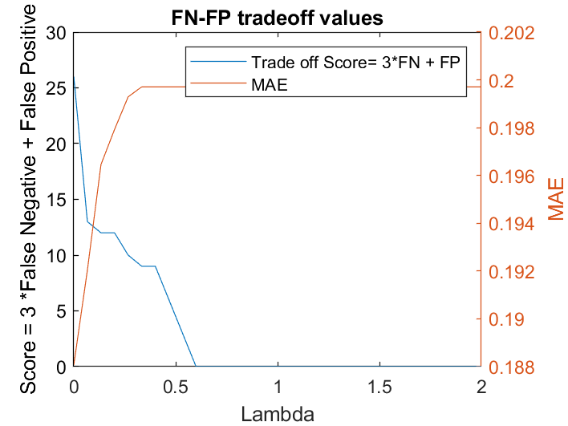
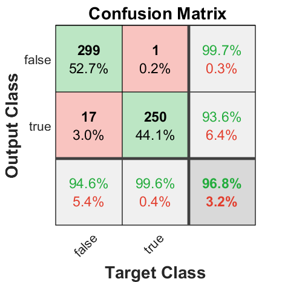
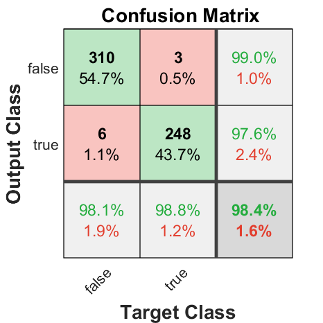
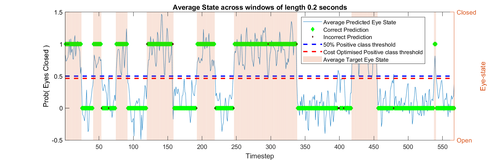
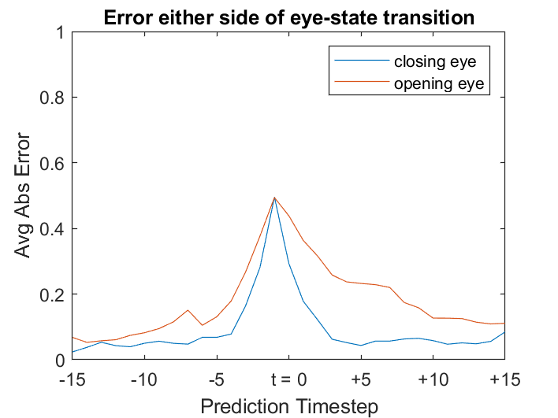
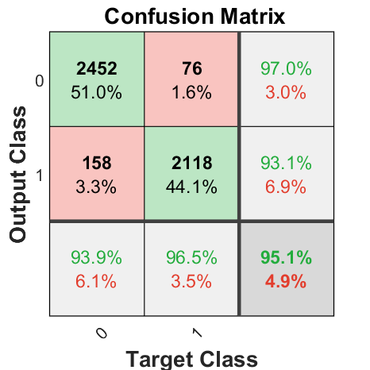

Autonomous vechicle microsleep detector Vol3: Misclassification tradeoff
Binary classification using EEG readings (part 3 of 3)

It’s much more costly to the end user for the autonomous vehcile to not take over the steering when eyes are closed, than to take over steering when eyes are open.
Table of Contents
- Motivation & approach
- Assymetric Loss function: trading incorrect Open state detection for incorrect Closed states.
- Adjust observation weights - Probit model
Motivation & approach
Understanding the context of the business application of a machine learning solution is critical. The business problem was for a driver microsleep detector, though by thinking about the context of the real world application, we decided it was much worse to classify a “Closed” state as an “Open”, than it was to classify eyes as closed, when really they were open. It’s much more costly to the end user for the autonomous vehcile to not take over the steering when eyes are closed, than to take over steering when eyes are open. Open eyes will also be called “Positive”, and closed eyes will be called Negative. So we want to avoid a false positive (F.P.) 3 times as much as we want to avoid a false negative (F.N.)
In the modelling done so far, the loss curves for (mis)classifying “eyes open” is the same as loss curve for classifying “eyes closed”. The False Negative to False Positive ratios for all 4 models so far;
- Probit regression: 7:6 (FPs : FNs)
- Lasso Probit regression: 10:10
- Partial Least Squares regression: 8:13
- Reccurent neural network (LSTM): 16:88
The goal is to get this ratio to be 3:1
Assymetric Loss function: trading incorrect Open state detection for incorrect Closed states.
Assymetric loss function: “It’s much more important to not mistake eyes closed for eyes open, than the other way around”
The objective is to correctly predict the binary eye state: ‘open’ or ‘closed’. This is commonly done with a cross-entropy loss function. The ‘log’ helps to move faster from confidently wrong models in the training process, than it does from slightly wrong models.
$$\mathrm{Loss}=-\frac{1}{N}\sum_{i=1}^N y_i \cdot \mathrm{log}\left(p\left(y_i \right)\right)+\left(1-y_i \right)\cdot \mathrm{log}\left(1-p\left(y_i \right)\right)$$
LossFcn = @(Pred,Real) -Real.*log(Pred) -(1-Real).*log(1-Pred);
Px = linspace(0.01,1,100);
Loss_closeeye = LossFcn( Px , ones(size(Px)) );
Loss_openeye = LossFcn( Px , zeros(size(Px)) );
figure('Position',[323 467 829 442])
plot( [Loss_openeye;Loss_closeeye]' )
title('$\mathrm{Loss}~f\left(\mathrm{prediction}\right)$','Interpreter','latex','FontSize',15)
legend({'target class=0 (Open eyes)','target class=1 (Closed eyes)'})
xlabel('Predicted Probability of class=1 (Closed eyes)'); ylabel('Log-Loss'); set(gca,'xticklabels',string(0:0.1:1))
an1=annotation('textarrow',[0.6750 0.8250],[0.65,0.5],'String',{'Predicted Probability eyes CLOSED: > 50% ';' = Autopilot OFF with eyes closed'});
an2=annotation('textarrow',[0.35 0.25],[0.8,0.4],'String',{'Predicted Probability eyes CLOSED: < 50% ';' = Autopilot ON with eyes open'});
% probability scores may be rounded up or down from 0.5, in practice.
carcrash_risk = Loss_closeeye.*[ones(1,50),NaN(1,50)];
autopilot_takeover_risk = Loss_openeye.*[NaN(1,50),ones(1,50)];
hold on;
p1 = plot( carcrash_risk','r','LineWidth',2,'HandleVisibility','off'); p2 = plot( autopilot_takeover_risk','b','LineWidth',2,'HandleVisibility','off');
This loss shows it is equally bad to predict that eyes are closed when they are open, as it does to predict eyes open, when they are closed.
Knowing the model will make some mistakes, we’d prefer more false “Opens” if we can get them, even at the cost of more of false “Closed”. Penalising the loss curve more heavily when the true class is “Closed” could help to achieve this. It would be an asymmetric loss function.
% loss for miscalssifying Closed eyes
carcrash_risk_weighted = (Loss_closeeye.^(2)).*[ones(1,50),NaN(1,50)];
plot( Loss_closeeye.^(2)','r.-','DisplayName','target class=1 (weighted)','MarkerSize',10); %set(gca,'YLim',[0 5]);%,'DisplayName','target class=0 (Closed eyes), increased penalty'); set(gca,'YLim',[0 5]);
p1.YData = Loss_closeeye(1:50).^(2)';
delete(an2);
ylim([0 5])
annotation_datadims( 'textarrow',[(30) (20)],[4.5,carcrash_risk_weighted(20)],'String',{'Incresed penalty for misclassifying CLOSED Eyes'} );
Directly translating business requirement to a Loss function using convex optimisation methods for a Least squares regression
Directly changing the loss function changes the theoretical penalty for misclassification, but in practice we are only interested in when the probability drops below 50% for any given classifier.
A direct method for translating the business cost to an objective for a machine learning model is to express the business problem mathematically for the optimisation algorithm. In MATLAB, doing this with built in functions is tricky, though there is a Convex Optimisation package which allows you to write your own optimisation problems directly, for a solver to then find the parameters that minimise (or maximise) the cost.
To simplfy the example we’ll treat it as a least squares regression problem, instead of assuming a gaussian distribution, and a probit link function. The objective function looks to find a parameter vector w that minimises squared errors no matter the class of target observation.
$$ \begin{array}{l}p_w \left(x\right)=x\cdot {\mathit{\mathbf{w}}}^{\mathrm{T}} -b\\ \textrm{Cost}\left(y,p\right)=\sqrt{{\left(p-y\right)}^2 }\\ \underset{\mathbf{w}}{\arg \min} \left( \sum_{i\in \textrm{All}\ \textrm{observations}} \textrm{Cost}\left(y_i ,p_i \right) \right)\end{array} $$
load('EEGloseEyes_Modelling.mat','idx_openclose','x_train' ,'y_weighted','win_trainN','B','B0','idxLambdaMinDeviance','steplength_seconds','xLogNorm_train','ncomp');
[p,q] = size(x_train);
% binomial of the average eye-state prediction
ybin = y_weighted>=0.5;
% Basic least squares regression
cvx_begin quiet
% initilise weights & intercept
variables W1(q) b0(1)
minimize( norm( x_train*W1 + b0 - ybin) )
cvx_end
% the confusion matrix shows the FN-FP trade-off
yfit_LS = x_train*W1 + b0;
plotPrediction( yfit_LS>=0.5 , ybin==1, yfit_LS , y_weighted , 0.2 , 'confusion');
This gives a fairly accurate model, although because it is a simple least squares regression, the fitted values are no longer interpretable as probabilities. There are no constraints holding \(p_w \left(x\right)\) in the range [0, 1], nor a term incentivising predictions to follow any probability distribution.
An explicit objective function for the business constraint
To shift errors into the false negative cateogry, at the expense of false positive errors, their individual costs need to be specficied. A misclassification happens when the residual of probability predicion is larger in magnitude than 0.5. i.e. a False Negative (FN) occurs when target class is 1, but prediction probability of target class is less than 50%
$$\begin{array}{l}\mathrm{FP}\left(p\right)=\left\lbrace \begin{array}{cc}p_x -0\ldotp 5 & p_x >0\ldotp 5\\0 & p_x \le 0\ldotp 5\end{array}\right.\\ \mathrm{FN}\left(p\right)=\left\lbrace \begin{array}{cc}0 & p_x >0\ldotp 5\\0\ldotp 5-p_x & p_x \le 0\ldotp 5\end{array}\right.\end{array}$$
Now we can add a new component to the existing (least squares) objective function, that targets the tradeoff between error costs specified by the business problem. The deisgn constraints added to the original business problem statement were that ‘Closed eye’ misclassifications (FP’s) are 3x as bad as ‘Open eye’ miscalssifcations (FN’s);
$$\underset{\mathbf{w},\lambda }{\arg \min} \left(\left(1-\lambda \right)\sum_{i\in \textrm{All}\ \textrm{observations}} \textrm{Cost}\left(y_i ,p_i \right)+\lambda \left(\sum_{i\in \textrm{Closed}\ \textrm{eye}} \textrm{FN}+\sum_{i\in \textrm{Open}\ \textrm{eye}} 3\cdot \textrm{FP}\right)\right)$$
The parameter “λ” is added to specify how important the new ‘tradeoff’ term is relative to the original error term is \( \textrm{Cost}\left(y_i ,p_i \right) \) . While the explicit goal is reduction of misclassifications is the goal, in practice we want to penalise a model that predicts a class correctly with only a slim margin (i.e. when a class is only 51% likely). The new tradeoff cost term alone would leave us with a model not robust to measurement error in a real-world application (as seen in the Probit modelling).
Both these terms can be solved as a convex optimisation problem independently, threfore can be solved as the sum of the two also. Finding out which cost term is more important to achieving the overall FN-FP tradeoff will come through re-weighting each terms relative importance.
This new λ-term increases 3 times faster with Positive class residuals that are over the classification threshold (>=0.5), than it does with negative class residuals that are under the classification threshold (<0.5).
Implementing the CVX package for MATLAB;
% least squares regression, over different weights of false classification tradeoffs
[CMscore , CM , params, MAE]=deal([]);
% test a range of lambda values
Lrange = linspace(0,10,31);
for li=1:numel(Lrange)
lamda = Lrange(li);
%solve the convex optimisation problem: || Ax - b || =0
cvx_begin quiet
% initilise weights & intercept
variables W2(q) b0(1)
% search for best model parameters by minimising this expression
minimize( ( norm(x_train*W2 + b0 - ybin) ) - lamda*( ...
sum( min( 0 , (x_train(ybin==1,:)*W2 + b0) - 0.5) ) + (3)*sum( min( 0, 0.5 - (x_train(ybin==0,:)*W2 +b0)) ) ) )
cvx_end
% store results using 'lambda'-strong FN FP tradeoff
CM( : , : , li ) = confusionmat( (ybin==1) , (x_train*W2 + b0) >=0.5 );
CMscore(li) = sum( ybin==1 & ((x_train*W2+b0) < 0.5) ) + ...
sum( ybin==0 & ((x_train*W2+b0) >= 0.5) ).*3;
params( :,li ) = [b0 ; W2];
MAE(li) = mean( abs(x_train*W2- ybin + b0) );
end
[~ , mnI] = min(CMscore);
figure; plot(Lrange,CMscore); ylabel('Score = 3 *False Negative + False Positive'); xlabel('Lambda')
yyaxis right;plot(Lrange,MAE); title('FN-FP tradeoff values'); legend({'Trade off Score= 3*FN + FP','MAE'}); ylabel('MAE')

Increasing the strength of the “FN-FP tradeoff” with λ, gives a slightly larger mean absolute error, even if the tradeoff between false positives and negatives is optimised. At lambda = 1.5, the tradeoff doesn’t improve much, even though the overall mean absolute error is getting worse. With MAE growing, the model would probably be less robust to slight variations in the data, as the margin beteen the prediction, and the classification threshold (0.5) becomes smaller.
yfit_weightedLS = x_train*params( 2:end ,mnI ) + params(1,mnI);
plotPrediction( yfit_weightedLS>=0.5 , ybin==1, (yfit_weightedLS) , y_weighted , 0.2 , 'timeseries' );
hold on; plot( find(ismembertol(yfit_weightedLS , 0.5,1e-6)) , yfit_weightedLS( (ismembertol(yfit_weightedLS , 0.5,1e-6)) ) ,'mo','LineWidth',2,'HandleVisibility','off')
Through tuning the weighted term in the objective function, a set of model parameters was found which cleanly bisects the open classes from closed classes (100% accurate). Although, many of the prediction probabilities are infitesimialy close to the classification threshold.
Highlighted in purple are predictions within 1e-6 of the classification threshold. The cost function’s new term is piecewise - this encourages optimal model parameters such that predictions mostly lie just before the classification boundary ( > or < 0.5).
When so many predictions lie at the decision boundary for classification, very small changes in variables could cause a very large number of predictions to miscalssify. It would only take a parameter’s measurement in an application setting to be off by \(< \frac{{10}^{-6} }{w_x } \) for all of those predictions to miscalssify. The cost function discontinuity makes the model not robust.
Methods to implement an imbalanced cost of FN vs FP
When a certain modellling technique is needed, but adjusting the objective function directly isn’t possible, there are other techniques which can have equivalent results;
- Immitate a “class imbalance” in the dataset. i.e. adjust the intercept of PLS regression to identify different FP FN tradeoffs.
- Adjust the class threshold until the optimal cost is achieved.
- Rewrite the cost function to make it asymettrical: one that equates a FP to be 3x as costly as a FN, particularly across probabilities that would be above 0.5, or below 0.5 respretively. (see asymetric cost explanation at start of EDA)
- Use ensemble methods to give weight to the models which give a balance in FP FN as per the desired application.
Each of the 4 models developed will have a different technique applied, for illustrative purposes.
Adjust intercept - Lasso-probit model
The modelling tools MATLAB provides automate the lasso algorithm but make it difficult to take approach 3, or 4. Instead, the models' intercept will be adjusted across a range of values until the FN-FP tradeoff is optimal (FN=3*FP).
% initialise range of model intercept adjustments
FPFNtradeoff = 0.5:0.005:1.5;
confMat_lasso = NaN( 2 , 2 , numel(FPFNtradeoff));
weightedCost_lasso = NaN(1, numel(FPFNtradeoff));
yfitLassoBinom = false( win_trainN, numel(FPFNtradeoff));
yfitLasso = zeros( win_trainN, numel(FPFNtradeoff));
for ci=1:numel(FPFNtradeoff)
% adjust the model intercept
coef = [(B0 .* FPFNtradeoff(ci)); B(:,idxLambdaMinDeviance)];
% evaluate lasso model with the adjusted intercept.
yfitLasso(:,ci) = glmval(coef, x_train ,'probit');
yfitLassoBinom(:,ci) = (yfitLasso(:,ci)>=0.5);
confMat_lasso(:,:,ci) = confusionmat( categorical( y_weighted>= 0.5 ) , categorical(yfitLassoBinom(:,ci)) );
% cost of misclassifications, according to the problem definition statement, at the current intercept adjustment
weightedCost_lasso(ci) = (3)*confMat_lasso(1,2,ci) + confMat_lasso(2,1,ci);
end
% inspect FN-FP tradeoff score vs. intercept adjustment (lambda)
trfh = figure;
plot(FPFNtradeoff,weightedCost_lasso);
title('False Negative - Positive tradeoff scores')
ylabel('Score = 3 *False Negative + False Positive'); xlabel('Lamda')
% minimum of tradeoff score.
[~,mnI] = min(weightedCost_lasso);
bestIntercept = (B0 .* FPFNtradeoff(mnI));
yfit_weightedLasso = yfitLasso(:,mnI);
% Plot prediction as time-series, and Confusion Matrix
[ ~ ] = plotPrediction( yfit_weightedLasso>=0.5 , ybin, yfit_weightedLasso , y_weighted , steplength_seconds ,'confusion');

Across all the adjustments to the lasso model’s intercept term, the minimum FN-FP tradeoff-weighted score occurs with intercept 1.5% higher than the balanced-cost case. This gives 6 times the false positives than false negatives.
Adjust observation weights - Probit model
Weighting observations is usually reserved for differences in the fidelity of measurement of those observations. However in essence it’s adjusting the ‘importance’ of the observation in the overall purpose of the model. Each prediction residual in the “Open” class will count as an additional ‘w’ data points, in the maximum likelihood parameter search.
Unlike the lasso model, no action was taken to hedge against poor generalisation performance, in a similar way the lasso model is prone to overfitting when searching for the best parameter, so is the probit mdoel when searching for the best observation weighting. Cross validated scores are taken for the FN-FP tradeoff;
% create indices that separate data into 10 train and test sets
Xval = cvpartition(ybin,'KFold', 20 );
[confMatXval_probit , weightedCost_probit] = deal( [] );
% weighting factor for each observation in data
wi = ones(size(ybin));
% iterate over differing observation weights, either side of the true FN = 3*FP;
FPFNtradeoff = linspace(1,5,21);
yfit_probit = NaN( size(y_weighted,1),numel(FPFNtradeoff) );
for ci=1:numel(FPFNtradeoff)
wi(ybin==1) = FPFNtradeoff(ci);
mdl_probit = fitglm( x_train ,y_weighted,'Distribution','binomial','link','probit','Weights', wi );
mdl_probit = remlargePv3(mdl_probit,'',0.01);
% evaluate model over each cross validation set
for k = 1:Xval.NumTestSets
mdlXval = fitglm(mdl_probit.Variables(training(Xval,k),:), mdl_probit.Formula,'Distribution','binomial','link','probit','Weights',wi(training(Xval,k)));
yhatXval = predict(mdlXval , x_train(test(Xval,k),:) );
y_hatXvalBinom = yhatXval>=0.5;
confMatXval_probit(:,:,ci,k) = confusionmat( categorical(ybin(test(Xval,k),:)) , categorical(y_hatXvalBinom) );
weightedCost_probit(k,ci) = (3)*confMatXval_probit(1,2,ci,k) + confMatXval_probit(2,1,ci,k);
end
yfit_probit(:,ci) = mdl_probit.Fitted.Response;
end
% Inspect cross validated mean scores of error tradeoff costs
figure('Position',[612 358 945 568]);
boxplot(weightedCost_probit);%,'PlotStyle','compact')
hold on; plot(1:21,mean(weightedCost_probit,1),'r--','LineWidth',2);
set(gca,'xticklabels',string(FPFNtradeoff));
xlabel('Relative importance of "Open eyes" over "Closed eyes" observations'); ylabel('Score = 3 *False Negative + False Positive');
title('False Negative - Positive tradeoff scores')
Tradeoff score standard deviations overlap a lot across the different observation weightings. This hints that the tradeoff search process is a form of overfitting also.
% select model created with open class observation weightings which gives the lowest total (weighted) cost of errors.
[~,mnI] = min( mean(weightedCost_probit,1) );
bestObservationweighting = FPFNtradeoff(mnI);
yfit_weightedProbit = yfit_probit(:,mnI);
% Plot prediction as time-series, and Confusion Matrix
[ ~ ] = plotPrediction( yfit_weightedProbit>=0.5 , ybin, yfit_weightedProbit , y_weighted , steplength_seconds ,'confusion');

With the tradeoff, model performance for Probit is now better suited to the imabalanced misclassification cost than without a tradeoff.
Select a classification threshold - Partial Least Squares
the simplest technique, applicable to most binary classification models is adjusting the prediction threshold value until predictions minimise the total cost of FPs & FNs.
%% Fit a PLS model, then find optimal FP-FN tradeoff using Threshold Search
FPFNtradeoff = linspace(0.5,1.5,50);
thresh = FPFNtradeoff.*0.5;
confMat = NaN( 2 );
weightedCost_PLS = deal( NaN( Xval.NumTestSets , numel(FPFNtradeoff) ) );
% fit PLS model using previous settings
[Xloadings,Yloadings,Xscores,Yscores,betaPLS,~] = plsregress( xLogNorm_train , y_weighted , ncomp );
yfitPLS = [ones(win_trainN,1)*betaPLS(1) + xLogNorm_train*betaPLS(2:end)];
% Loop over a range of adjustments to the base 50% classification threshold
for ci=1:numel(FPFNtradeoff)
% evaluate model over each cross validation set
for k = 1:Xval.NumTestSets
confMat = confusionmat( categorical( y_weighted(test(Xval,k))>= thresh(:,ci) ) , categorical(yfitPLS((test(Xval,k)))>= thresh(:,ci)) );
weightedCost_PLS(k,ci) = (3)*confMat(1,2) + confMat(2,1);
end
end
[~,mnI] = min( mean(weightedCost_PLS,1) );
% Inspect cross validated mean scores of error tradeoff costs
figure('Position',[612 358 945 568]);
boxplot(weightedCost_PLS);%,'PlotStyle','compact')
hold on; plot( 1:numel(thresh),mean(weightedCost_PLS,1),'r--','LineWidth',2);
plot( (mnI) , mean(weightedCost_PLS(:,mnI),1) , 'r*','LineWidth',10);
set(gca,{'XTick','XTickLabel'},{floor(linspace(1,ci,8)),[strcat(string(100.*round(thresh(floor(linspace(1,ci,8))),1)),'%')] } );
title({'False Negative - Positive tradeoff scores',['Min (weighted) cost when Positive classification threshold above ',num2str(round(100*thresh(mnI) ,1)),'%']})
ylabel('Score = 3 *False Negative + False Positive'); xlabel('Open Eyes classification threshold')

Classifying an eye state as Open when its probability is less than 58.7% gives the overall lowest cost of incorrect predictions when FPs are 3 times the importance of FNs.
% Plot prediction as time-series, and Confusion Matrix
weightedThreshold = thresh(:,mnI);
[ fh1, ~ ] = plotPrediction( yfitPLS>=weightedThreshold , ybin, yfitPLS , y_weighted , steplength_seconds );
figure(fh1)
plot( 1:win_trainN , ones(1,win_trainN)*0.5,'b--' ,'LineWidth',2,'DisplayName','50% Positive class threshold')
hold on; plot( 1:win_trainN , ones(1,win_trainN)*thresh(:,mnI),'r--' ,'LineWidth',2,'DisplayName','Cost Optimised Positive class threshold')

The red line is the prediction threshold for Closed eyes, across the entire 117 second interval. The shifted threshold removed most of the open-eyes miscalssifications, but now many more closed states are predicted incorrectly.
Custom Loss function - Recurrent Neural Network (LSTM)
For the least squares regression, re-writing the objective function to include a term that penalises only misclassifications forced many of the predictions to lie just outside the classification boundary (≥ or < 50%). That model wouldn’t be robust to out-of-sample data.
The alternative is to make an objective function that is similar, but continuous & smooth at every point.
The Neural network algorithm I’ve designed allows customising all parts of training and inference. Any customised loss function can be implemented, but it is the derivative of loss function that guides the training. Instead of the regular binary cross entropy loss, an adjustment is made for when the target class is “Open eyes”.
The new cost gradient needs to have a value of 0 when prediction is perfect for both classes, but must grow faster with a closed eyes classification (i.e. an open eyes misclassification)
% Regular binary cross entropy loss
Loss_delta = @(Pred,Real) (-Real./Pred) + ( (1-Real)./(1-Pred) );
% Middle-range weighted on the negative class
Loss_delta_sine = @(Pred,Real) (Real==1).*((-Real./(Pred.^(1+sin([Pred.*pi])))) + ( (1-Real)./(1-(Pred.^(1+sin([Pred.*pi])))) )) ...
+ (Real==0).*((-Real./Pred) + ( (1-Real)./(1-Pred) ));
% Squared Cross-entropy loss for negative class
Loss_delta_squared = @(Pred,Real) (Real==1).*((-Real./(Pred.^2)) + ( (1-Real)./(1-(Pred.^2)) )) ...
+ (Real==0).*((-Real./Pred) + ( (1-Real)./(1-Pred) ));
px = linspace(0,0.99,100);
figure;
plot([ -Loss_delta( px , ones(1,100) ) ; -Loss_delta_sine( px , ones(1,100) ) ; -Loss_delta_squared( px , ones(1,100) ) ]')
legend({'regular','sinWeighted','squared'});%'target class=1','target class=0'})
xlabel('Probability of correct class'); ylabel('Loss gradient');
set(gca,'XTickLabel',string(get(gca,'XTick')./100))
ylim([0 60]); title('Pre-Softmax error gradient')
Using the square of predictions in the equation gives extremely large gradients in higher probabilities than the regular case. As recurrent neural networks already have to overcome exploding gradeints in long sequence backpropogation, this function may prevent convergence.
The alternative is to find a blend between the two. Loss gradient w.r.t. the softmax output; $$\frac{\delta \mathrm{Loss}}{\delta z_i }=\left\lbrace \begin{array}{cc}\frac{{-t}_i}{y_i^{1+\mathrm{sin}\left({\pi y}_i \right)} } & t_i =1\ \left(\mathit{closed}\ \mathit{eyes}\right)\\ \frac{1}{y_i } & t_i =0\ \left(\mathit{open}\ \mathit{eyes}\right)\end{array}\right.$$
$$t: target\ class,\ y: predicted\ class,\ z: softmax\ output$$
Changing the existing RNN model so that it has the sine-weighted loss for open classes, and retraining the model;
load('EEGloseEyes_Modelling.mat','NNLayerEnc','NNLayerDec','NNLayerFinal','trainingSettings','DataX_batched','DataY_batched','epochs','Xind_c' , 'Yind_c','seqlen_out','dsr','N')
% New Model, equivalent hyperparameters to the symmetric loss LSTM model.
NNModels = [{NNLayerEnc},{NNLayerDec},{NNLayerFinal}];
% Loss type will be Sine weighted on the "Closed Eyes" class
trainingSettings.LossType = "WeightedTwoClassCrossEntropy";
%% call training algorithm to learn the EEG dependencies
[NNModels, ~, ~ , ~ ] = ...
TrainSequnceNNetV3(NNModels, trainingSettings , DataX_batched, DataY_batched, [], []);
% Run an inference only loop over the dataset with the trained model
[NNModels, Predictions, ~, ~] = ...
TrainSequnceNNetV3(NNModels, epochs, trainingSettings , DataX_batched, DataY_batched, [], [],true,false);
% unroll prediction, take the average of each sequence from consecutive
% starting points
[Xunbatch, Yunbatch ] = batchdatasets( [] , DataX_batched, DataY_batched, 'unbatch_seq2batch', Xind_c , Yind_c );
% vector containing average of all 5-step predictions & errors (5 steps * 4800 samples = 24000 predictions)
VectorisedPrediction = reshape(Predictions(:,:,2), [numel(Predictions(:,:,2)) , 1] );
yfitRNNLSTM = accumarray( Yind_c(:) , VectorisedPrediction ,[],@mean , NaN);
% average of all predictions
AbsErr = (abs( yfitRNNLSTM - Yunbatch(:,2) ));
% entire sequence, positive is eyes closed.
TargetSeq = Yunbatch(:,2);
% transition from closed eye to open
openeyeId = find([NaN;diff(TargetSeq )]==1);
% transition from open eye to closed
closeeyeId = find([NaN;diff(TargetSeq)]==-1);
% extract mean absolute error 10 timesteps either side of an "Open eye"
TI = 15;
ABSE_openeye = arrayfun(@(rw) AbsErr((rw-TI):(rw+TI))' ,openeyeId ,'un',0);
ABSE_openeye = nanmedian(cat(1,ABSE_openeye{:}),1);
% extract mean absolute error 10 timesteps either side of a "Closed eye"
ABSE_closeeye = arrayfun(@(rw) AbsErr((rw-TI):(rw+TI))' ,closeeyeId ,'un',0)';
ABSE_closeeye = nanmedian(cat(1,ABSE_closeeye{:}),1);
% plot the average error either side of a state transition.
figure;
plot( [ABSE_openeye;ABSE_closeeye]' );
legend({'opening eye','closing eye'}); title('Error either side of eye-state transition')
timelabels = [strsplit(sprintf('-%g ',[TI :-1:1]')), strsplit(sprintf('+%g ',[1:TI ]'))];
timelabels(end)= []; timelabels(TI +1) = {'t = 0'};
ylabel('Avg Abs Error');
xlabel('Prediction Timestep');
xLabInds = unique([ceil(linspace(1,TI+1,4)) , ceil(linspace(TI+1, 2*TI +1,4)) ]);
set(gca,'xtick',xLabInds,'xticklabels', timelabels(xLabInds),'xlim' ,[1 2*TI+1],...
'ylim' ,[0 1]);

On average, the prediction has error centered around eye state transitions. The network placed lower loss on observations trailing from a ‘closing eye’ transition, so hasn’t learnt the transition pattern as well, due to the asymmetric loss function.
% Plot prediction as a Confusion Matrix
[ fh1 , fh2 ] = plotPrediction( round(yfitRNNLSTM) , TargetSeq, yfitRNNLSTM , TargetSeq , 117/(N) *seqlen_out*dsr ,'confusion' );

The results are as expected - More misclassifications when targe state is “0 / Open”, than when the target state is Closed. The neural network focused on eye closing transition patterns more, and it resulted in more false positives at the cost of false negatives.
Summary
Across the 4 methods for altering the cost balance of classes, each is more or less appropriate depending on the situation & type of model.
In the training process, EEG correlations were windowed with length 256 and step length of 26, giving a total of 576 samples. In the final comparison the step length was set to 1, to give 14724 observations (14980-256). The RNN was downsampled with a sliding & overlapping average in the training process with downsampling ratio of 3, for comparison it was upsampled which lost fidelity, but brought number of observations to the full 14980.
EEGCloseEyes_CompreModels("CompareTradeoffModels")
There is a definite effect in the ratio of false negatives to positives across all approaches. Though, it has come at the cost of unweighted accuracy overall, or length of consequtive time the prediction is incorrect.
FN_FPratio Accuracy
__________ ________
Probit " 1.6" 95.7
Probit_W " 0.56" 94.5
Lasso " 2.49" 95.8
Lasso_W " 5.14" 95
PLS " 2.54" 95.4
PLS_W "19.02" 93.9
LSTM "146.5" 90.2
LSTM_W " 0.38" 95.2